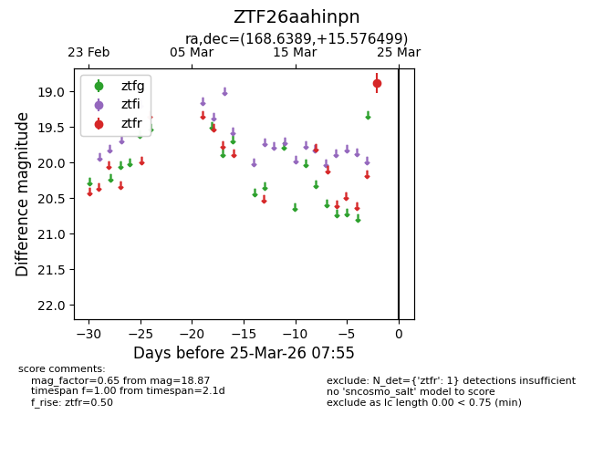
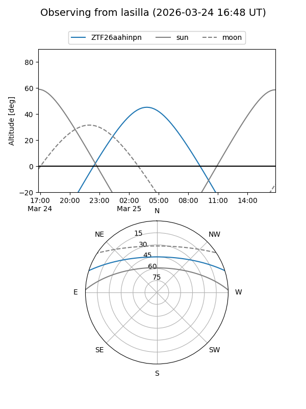
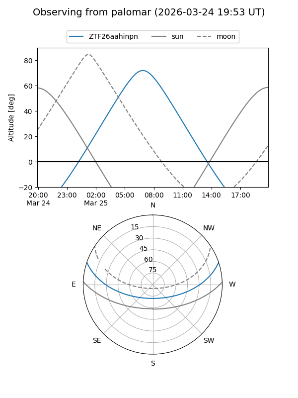

ZTF26aahinpn
Target ZTF26aahinpn at 2026-03-25 07:59
Aliases and brokers:
FINK: link
Lasair: link
ALeRCE: link
alt names
ZTF26aahinpn (ztf,fink_ztf)
Coordinates:
equatorial (ra, dec) = 168.6389,+15.57650
equatorial (HMS+DMS) = 11:14:33.35,+15:34:35.39
galactic (l, b) = (235.1714,+64.72631)
Flags:
Photometry:
last ztfr=18.87
1 ztfr detections
Lightcurve

Visibility


Additional plots